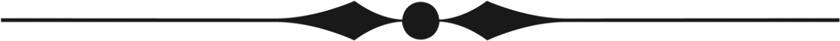
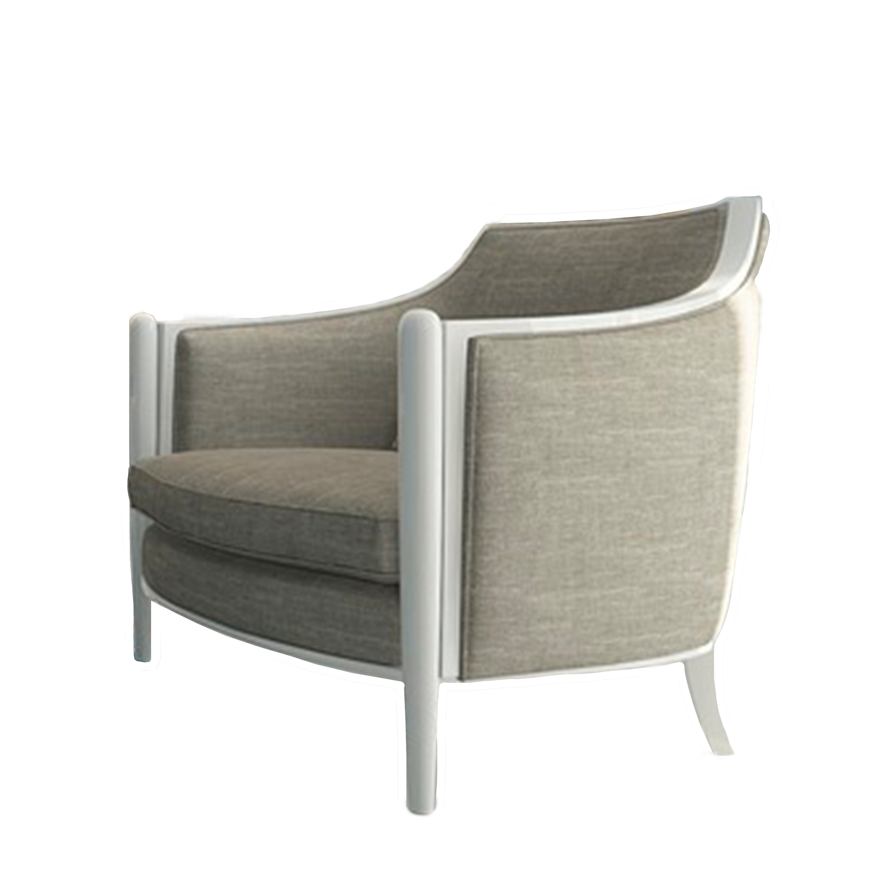
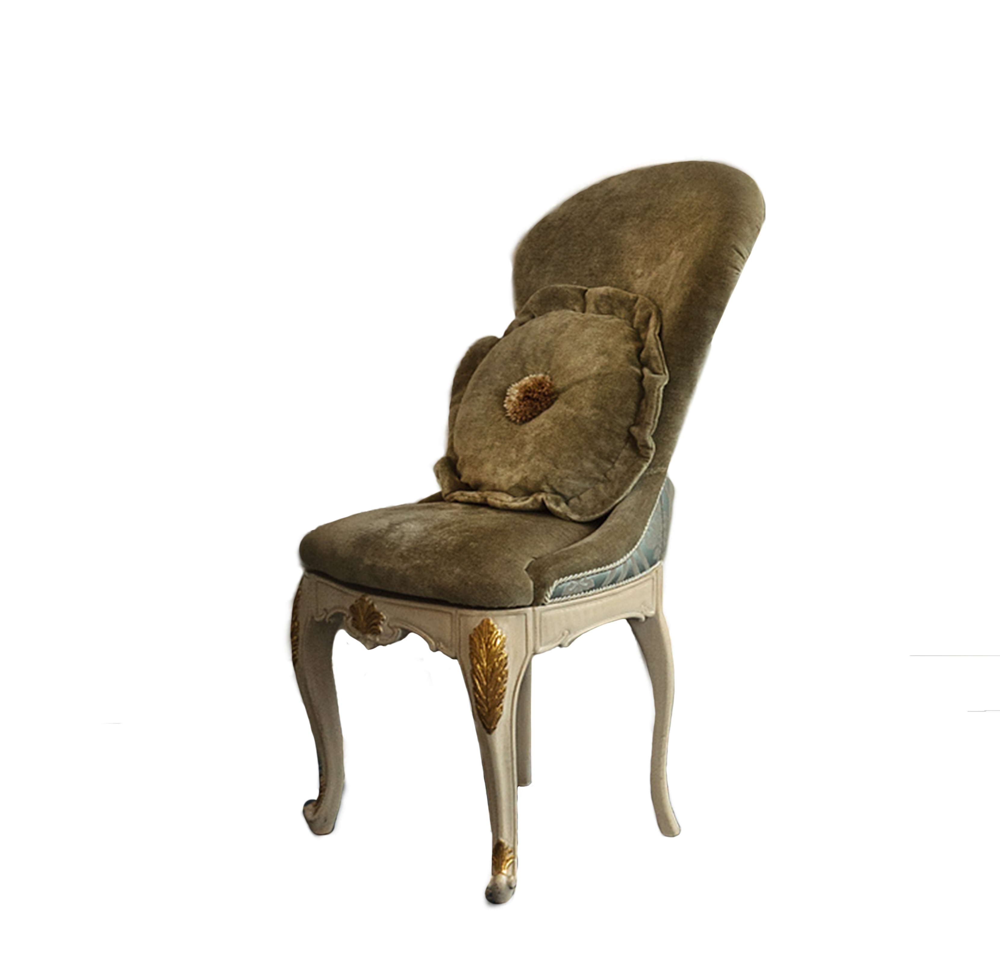
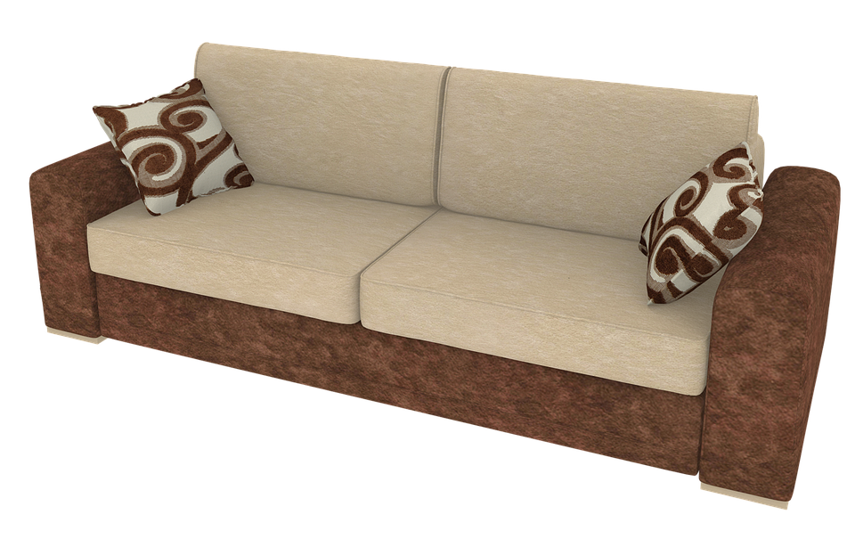

Vores produkter udtrykker kvalitet, selvsikkerhed, komfort og ikke mindst luksus.
Når vores møbel er færdigt, er der lagt en masse lidenskab og ekspertise i håndværket.
Møbelsnedkerne har haft hvert møbel mellem deres hænder, for at vi med sikkerhed, har fået skabt en varm modernitet i møblets udtryk.
Vi arbejder bl.a. med ægte anilin læder og bladguld - materialer der kun bliver smukkere over tid.

Stole
Golden
Med denne loungestol har Empire skab en loungstol der på én og samme tid er komfortabel og skulpturel.
Med det håndsyet guld/orange mønster, udstråler stolen sin helt egen personlighed, hvorpå den kan få
hvert et rum til at lyse op. Stolen er lavet med teaktræs ben, som har den fantastiske egenskab, at det er varig og den mest formstabile træsort.
51.000,00 ,-

Midtnight
Midtnight loungestolen er en stol med et rent moderne design, der vil give et lækkert look i lige det rum, hvor stolen ønskes.
Den giver et stilrent design, der giver plads til personlighed. Stolen er polstret hos vores lokale polstre Søren Pedersen.
Udover det er stolebenene lavet af teaktræ, som er slidstærkt og varigt.
Synk ned i dens komfort, dens bløde polstring og uendelige muligheder for indretning - hvad end det er til den lille stue eller den helt store entré.
50.000,00 ,-
Léon
Léon trone stolen, bringer én tilbage til den gamle barok tid, med dens historiske design. Intet på denne stol er overladt til tilfældighederne,
og hver detalje er blevet vendt nøje. Trone stolen er polstret hos den lokale polstre Søren Pedersen. Med stolens meget elegante look,
ville den kunne gøre sig godt i både stue, lounge og kontor. Dens detaljeret stoleben af lavet af lapacho træsorten, som har et super lækkert rødbrunt look.
Slå benene op foran pejsen, og lad dig drømme dig tilbage i historien.
60.000,00 ,-

Platin
Platin stolen er en stilistisk stol som udtrykker et feminint touch og ydre.
Ville gøre sig godt som f.eks. spisebordsstol til det store gedigne teaktræs spisebord.
Stolen får en til at drømme sig tilbage til en svunden tid. Den er betrukket med eksklusivt mørkegrøn velour,
samt polstret hos den lokale polstre Søren Pedersen. De yndige stoleben er pålagt bladguld på alle fire stoleben,
for igen at få følelsen af eksklusivitet. Læn dig tilbage og mærk stolens komfort, mens du lader dig føres tilbage i tiden.
20.000,00 ,-
Sofaer

Novum
Novum sofaen er en fuldpolstret 2 personers sofa. Den er designet til daglig brug, uden nogen specifik funktion eller formål.
Sofaen er opbygget på komfort, hvilket også kommer til udtryk i dens rene linjer. Dette gør at den ville pynte hvert et rum man ønsker sig,
og giver et stilrent udtryk. Sofaen fås både i stof og ægte anilin læder. Sofaen er polstret hos den lokale polstre Søren Pedersen.
Lad dig hengive til Novums ubeskrivelige komfort, dens polstring og dens egenskab til uendelige muligheder for indretning.
Stof: 85.000,00 ,-
Anilin læder: 100.000,00 ,-
Rosea
Rosea er en fuldpolstret 2-personers sofa i ægte anilin læder. Den er designet til daglig brug, men ville f.eks gøre sig super godt i en Lounge,
med sit unikke barok look. Den lyse farve samt de bladgulds belagte knapper i ryglænet, giver sofaen et feminint udtryk, der sammen med sin ramme lavet af teaktræ giver et luksuriøst look.
Sofaen er ikke designet til noget bestemt formål. Den er polstret hos den lokale polstre Søren Pedersen. Udover den er super elegant, bygger dens versatilitet på komfort.
95.000,00 ,-